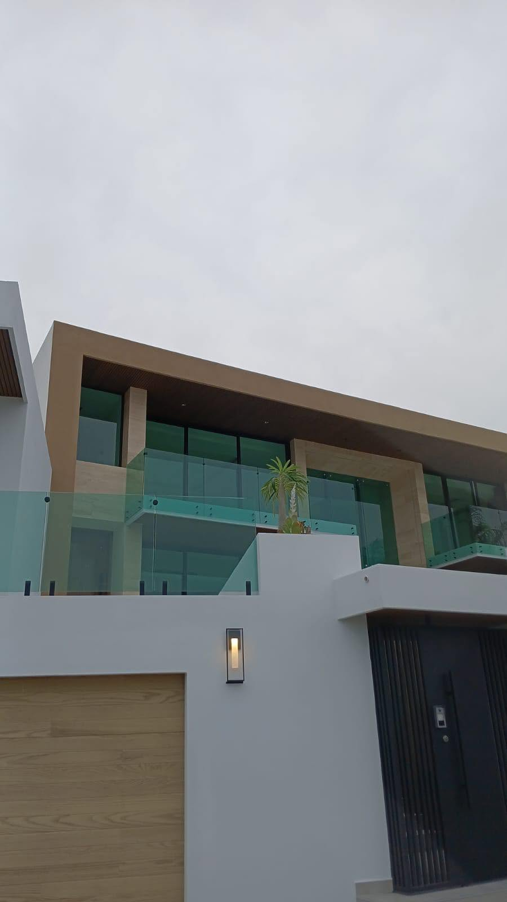

VIDRIO + ALUMINIO · LA PAZ, B.C.S.
Una nueva
perspectiva
para tu espacio.
Ventanas, puertas y cancelería que conectan tu espacio con la luz. Conoce nuestro trabajo y cuéntanos lo que tienes en mente.
Solicitar una cotización ↗Explorar nuestros trabajos ↓
El detalle hace
la diferencia.
01 / LO QUE HACEMOS
Soluciones para cada ambienteLuz, líneas limpias.
Posibilidades a tu medida.
Fabricación y elaboración de ventanas, puertas, cancelería, barandales y espejos. Elige una solución y platiquemos sobre las características de tu proyecto.
Ventanas
Aperturas que aportan luz y conectan el interior con el exterior.
↗02Puertas
Aluminio y vidrio para accesos con presencia y personalidad.
↗03Canceles
Divisiones y canceles de baño adaptados a tu espacio.
↗04Barandales
Detalles de vidrio que mantienen la continuidad visual.
↗05Espejos
Una pieza para ampliar la luz y completar tu ambiente.
↗02 / NUESTRO TRABAJO
Ver Facebook ↗Los detalles
hablan por sí solos.
Una selección de trabajos publicados por el negocio.
Abre cada fotografía para verla de cerca.
03 / VIDRIOS Y ALUMINIOS DEL GOLFO
Oficio que se ve.
Detalles que se sienten.
Somos un negocio de La Paz dedicado a la fabricación y elaboración de soluciones en vidrio y aluminio. En colaboración con Vidrios y Aluminios UT.
Nuestros trabajos publicados incluyen cancel de 10 mm con cristal esmerilado y puertas europeas línea 1400 con acabado nogal, herrajes negros y cristal de seguridad laminado.
04 / EMPECEMOS POR TU IDEA
De la idea
a una cotización clara.
Cuéntanos qué necesitas
Comparte el tipo de trabajo, tu ubicación y una descripción de tu espacio.
Revisamos los detalles
Consulta materiales, medidas y condiciones de instalación directamente con el negocio.
Recibe tu propuesta
Confirma el alcance, importe y tiempos antes de autorizar cualquier trabajo.
05 / COTIZACIONES
Tu proyecto
empieza con
una conversación.
Cada espacio es diferente. El precio se define según medidas, materiales y condiciones de instalación.
Sin precios publicados. Solicita una propuesta para tu proyecto.
ESTAMOS EN LA PAZ